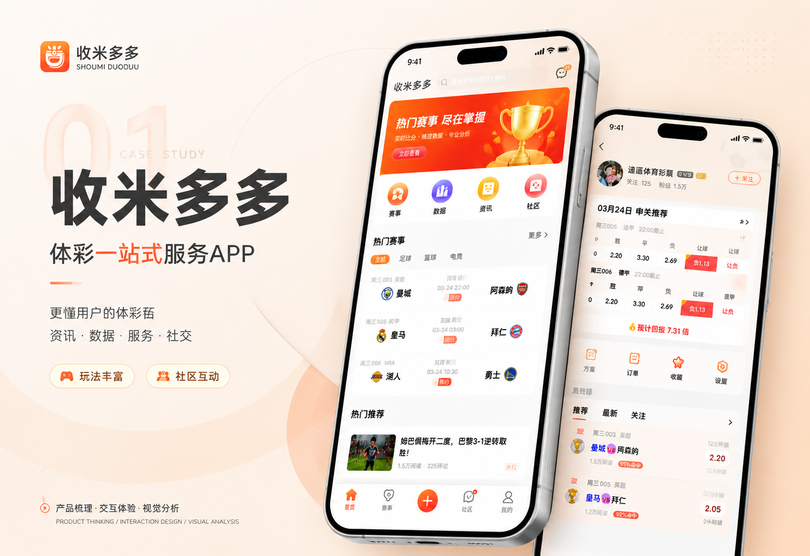
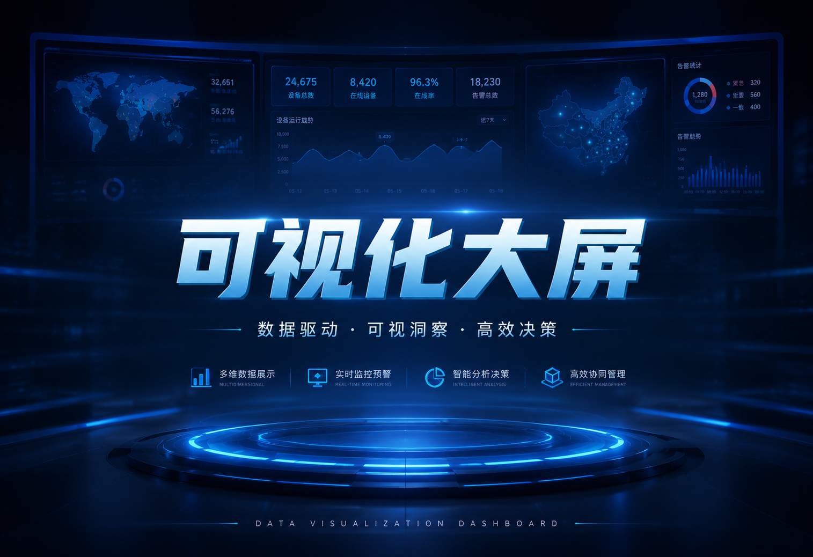
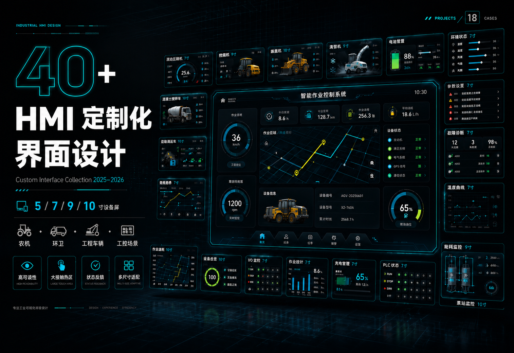

围绕体彩用户的赛前了解、数据判断、资讯追踪与社区互动，搭建完整移动端体验框架。
01 / Hero Cover
收米多多
体彩一站式服务 APP 赛事 · 数据 · 资讯 · 社区
02 / Project Overview
项目概览
从业务场景、用户路径、核心页面到组件规范，形成可复用、可延展的设计输出。
用清晰的信息分层和轻量化工具能力，降低用户获取赛事与方案信息的成本。
03 / Project Background
项目背景
体彩用户从“看赛事”逐渐转向“看数据、看观点、看社区”。
用户在了解赛事时往往需要同时浏览赛程、赔率、推荐方案、专家动态与讨论内容。信息分散会导致判断链路变长，也会让新用户难以快速建立理解。
信息来源分散，切换成本高
数据维度复杂，新手理解门槛高
内容可信度参差，用户判断成本高
社区互动弱，用户留存与复访不足
04 / User Research
用户研究
赛事跟进型
关注比赛时间、球队状态与关键资讯，需要快速获得当天热门赛事与提醒。
数据判断型
重视赔率变化、历史战绩和方案对比，需要稳定、可扫描的数据页面。
社区交流型
希望跟随达人观点、参与讨论与收藏方案，需要明确的内容反馈机制。
05 / Competitor Analysis
竞品分析
传统赛事类产品
赛事数据充分，但页面密度高、工具属性强，新手用户需要更长学习时间。
资讯社区类产品
内容氛围活跃，但数据与方案能力较弱，用户难以完成完整判断链路。
收米多多机会点
以赛事为入口，把数据、资讯、方案和社区串联成一条可持续浏览的服务路径。
06 / Product Strategy
产品策略
首页承接高频场景
通过热门赛事、快捷功能、资讯推荐和底部导航，让用户一进入即可完成主路径选择。
用分层信息降低判断成本
优先呈现比分、赔率、回报、方案状态等关键信息，把复杂数据组织成可读模块。
强化达人与社区关系
通过关注、粉丝量、方案推荐和讨论反馈，帮助用户建立持续关注的内容关系。
07 / Information Architecture
信息架构
- 首页热门赛事 / 快捷入口 / 推荐资讯
- 赛事赛程筛选 / 比赛详情 / 数据对比
- 方案推荐方案 / 订单确认 / 收藏追踪
- 社区达人动态 / 话题讨论 / 内容互动
- 我的账户资产 / 消息提醒 / 设置管理
08 / Design System
设计系统
色彩规范
#FF5B22
#FFB21A
#F04438
#1F2933
字体层级
- Title
- 28px / Bold
- Subtitle
- 18px / Semibold
- Body
- 14px / Regular
- Caption
- 12px / Regular
体验原则
09 / Core Page Design
核心页面设计
首页聚合
用 Banner、四大快捷入口、热门赛事与推荐资讯承接用户最常见的进入路径。
赛事详情
通过比赛列表、赔率变化、赛前状态与推荐标识，帮助用户快速定位重点比赛。
达人社区
强化关注、粉丝、推荐方案和内容动态，让用户在信息之外形成持续互动。
10 / Component Specification
组件规范
负1.13
92%命中
热门
进行中
赛事卡片
统一比赛编号、联赛、时间、队伍、赔率和状态标签，保障列表扫描效率。
达人卡片
统一头像、关注、粉丝量、命中标签和推荐入口，增强内容可信度。
方案卡片
突出回报率、玩法状态和行动按钮，让用户快速理解方案价值。
11 / Full Page Showcase
全页面展示


12 / Project Summary
项目总结
从单点功能展示升级为完整服务闭环。
收米多多的设计重点不只是界面美化，而是把赛事、数据、资讯和社区整合为一个可持续使用的产品体验，帮助用户更高效地获取信息、理解内容并沉淀关系。
建立清晰的首页核心入口
降低赛事和数据页面的阅读压力
强化达人内容与社区互动机制
沉淀可复用的视觉与组件规范